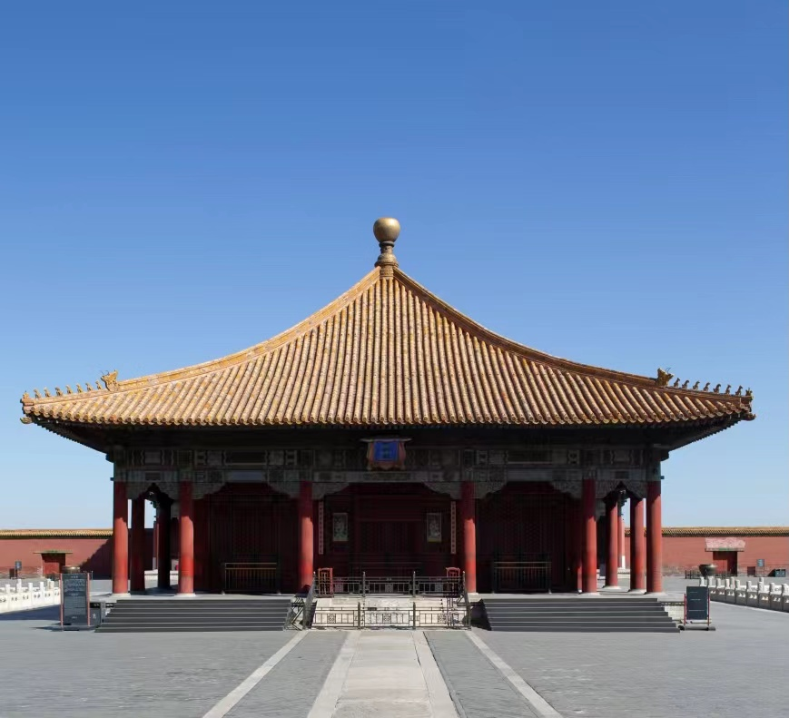
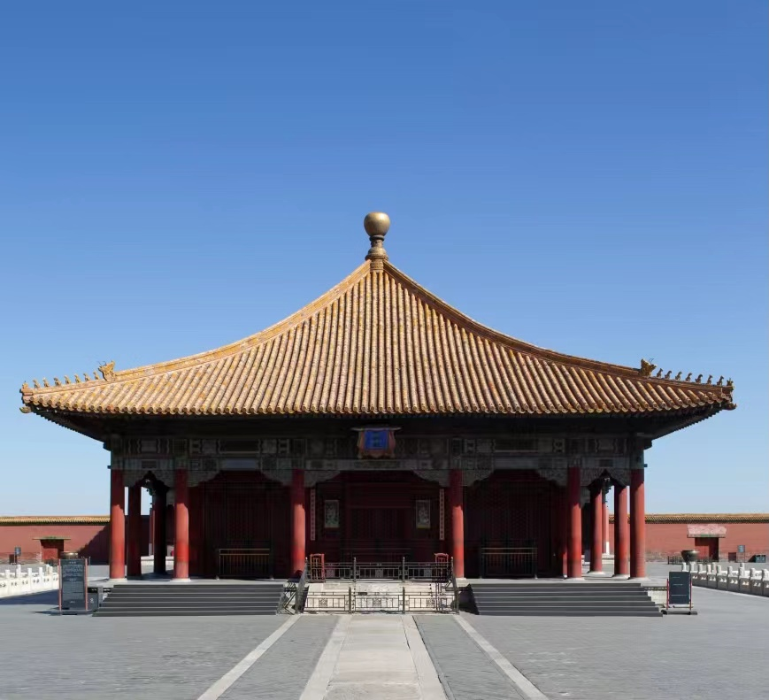

建筑物的屋面在顶部交汇为一点，形成尖顶，这种建筑叫攒尖建筑，其屋顶叫攒尖顶。攒尖式屋顶，宋朝时称“撮尖”、“斗尖”，清朝时称“攒尖”，其特点是屋顶为锥形，没有正脊，顶部集中于一点，即宝顶，该顶常用于亭、榭、阁和塔等建筑。攒尖顶有单檐、重檐之分，按形状可分为角式攒尖和圆形攒尖，其中角式攒尖顶有同其角数相同的垂脊，有三角、四角、五角、六角、八角等式样。圆形攒尖则没有垂脊，尖顶由竹节瓦逐渐收小。
以故宫为例，中和殿就是典型的四角攒尖建筑，而御花园中的万春亭与千秋亭的屋顶则是重檐圆形攒尖顶。
 
（中和殿）
（万春亭）